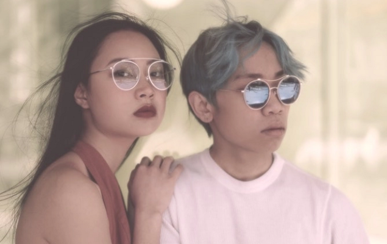

部落格
-

情人特別企劃
2020 Valentine’s Special
2020/02/14
一年一度西洋情人節即將到來，我們推出最強「情人節企劃」，為這個甜蜜的節日加溫。偶爾跟另一半來個低調情侶單品，結合彼此喜好、找出合適框型款式，在這個春夏輕鬆搭出屬於你們的甜蜜默契！
即日起至2/16為止，不論是熱戀情侶、自由自在一個人或是老夫老妻，只要從未來過本店的新朋友，綁定官方LINE好友，都可享專屬優惠⋯⋯moreMORE
-
街頭潮人訪問
Street Interview
2020/02/02
炎熱的夏季裡，衣著選擇經常希望以簡潔的風格為主，但有時單純只穿搭 T 恤或短袖開襟襯衫，又覺得整體造型度有點不足嗎？那麼不妨可以透過「配件」，為穿搭點綴出與眾不同的視覺層次，而本季有哪些必備的配件系列呢？一起從以下推薦的 3 款單品，讓你瞬間帥氣爆棚散發型男品味⋯⋯more
MORE
-
春季新品上市
New Selection
2020/02/02
2020 年春季的光學眼鏡跳脫前幾季流行的復古框型，比起圓框與小方框等文青風格，偏向個性款式的眉框眼鏡成為這一季的耀眼之星。除了經典款式如黑色眉框落在長方形鏡面上，眉宇之間露出專業莊重的特殊氣質，包覆在圓形鏡框上的貓眼型眉框則是強調出特殊設計感，俐落時髦的造型搭配一件簡單的白襯衫就相當有型，是喜愛時尚質感人士絕不能錯過的必備款式⋯⋯more
MORE
-
設計師獨享鏡框優惠
Sales for Designer
2020/01/18
2020 年春季的光學眼鏡跳脫前幾季流行的復古框型，比起圓框與小方框等文青風格，偏向個性款式的眉框眼鏡成為這一季的耀眼之星。除了經典款式如黑色眉框落在長方形鏡面上，眉宇之間露出專業莊重的特殊氣質，包覆在圓形鏡框上的貓眼型眉框則是強調出特殊設計感，俐落時髦的造型搭配一件簡單的白襯衫就相當有型，是喜愛時尚質感人士絕不能錯過的必備款式⋯⋯more
MORE
-
抵抗夏日大作戰
Summer Special
2019/08/07
2020 年春季的光學眼鏡跳脫前幾季流行的復古框型，比起圓框與小方框等文青風格，偏向個性款式的眉框眼鏡成為這一季的耀眼之星。除了經典款式如黑色眉框落在長方形鏡面上，眉宇之間露出專業莊重的特殊氣質，包覆在圓形鏡框上的貓眼型眉框則是強調出特殊設計感，俐落時髦的造型搭配一件簡單的白襯衫就相當有型，是喜愛時尚質感人士絕不能錯過的必備款式⋯⋯more
MORE